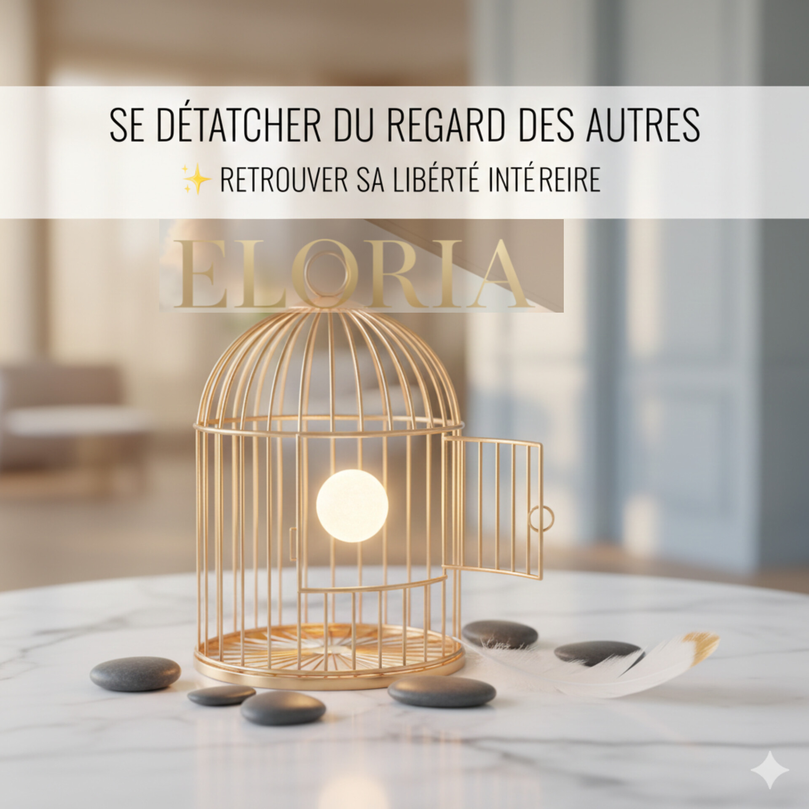

Mindset
Se détacher du regard des autres
Pendant longtemps, on apprend à se définir à travers les autres. Mais grandir, c'est comprendre que leur regard ne définit pas ta valeur. Un article sur la liberté intérieure.
Chaque regard, une histoire. Chaque geste, une signature.
Chaque visage raconte une interprétation unique de l'élégance.
Chaque jour, des instants suspendus.

Réflexions, inspirations, carnets d'adresses.
Pendant longtemps, on apprend à se définir à travers les autres. Mais grandir, c'est comprendre que leur regard ne définit pas ta valeur. Un article sur la liberté intérieure.
Anxieux·se, évitant·e, sécure — ces styles d'attachement que tu n'as pas choisis mais qui dirigent ta vie amoureuse. Et si tu pouvais descendre du manège ?
Pendant longtemps, on apprend à se définir à travers les autres. Leurs avis. Leurs attentes. Leurs réactions. Mais grandir, c'est comprendre une chose essentielle : le regard des autres ne définit pas ta valeur.
Le besoin d'appartenance est naturel. Nous voulons être aimés, reconnus, respectés.
Le problème commence lorsque ce besoin devient une dépendance. Quand tu n'oses plus être toi-même par peur du jugement. Quand tu doutes de ce que tu ressens parce que quelqu'un ne comprend pas. Quand tu vis pour être approuvé·e plutôt que pour être aligné·e.
À ce moment-là, tu t'éloignes doucement de toi.
Chaque personne te perçoit à travers :
Autrement dit, les autres ne te voient jamais entièrement. Ils voient une version filtrée de toi.
Fonder ta valeur sur quelque chose d'aussi subjectif, c'est te placer dans une instabilité permanente.
Se détacher du regard des autres, ce n'est pas ignorer tout le monde. Ce n'est pas devenir insensible.
C'est apprendre à faire la différence entre :
C'est écouter sans absorber. Recevoir sans se perdre.
Le vrai tournant commence quand tu te poses ces questions :
Plus tu t'écoutes, moins le bruit extérieur a de pouvoir sur toi.
Il faut du courage pour être authentique. Pour déplaire parfois. Pour être incompris·e.
Mais il faut encore plus de courage pour continuer à vivre une vie qui n'est pas la tienne.
Quand tu choisis d'être toi, certaines personnes s'éloignent. D'autres arrivent. Et surtout, tu te retrouves.
Chez ELORIA, nous croyons que le glow up le plus profond est invisible.
C'est celui qui te permet de :
Se détacher du regard des autres, c'est s'offrir une liberté intérieure.
Tu n'as pas besoin d'être compris·e par tout le monde. Tu as besoin d'être en paix avec toi-même.
✨ Quand tu choisis ton regard plutôt que celui des autres, tu commences vraiment à évoluer.
Tu connais ce moment où tout va bien — et soudain, plus rien.
Un message laissé sans réponse. Un ton qui change. Une absence.
Et toi, tu décolles.
Tu relis. Tu analyses. Tu te demandes ce que tu as fait.
Ou à l'inverse : tu sens l'autre qui s'accroche, qui veut des garanties, qui a besoin d'être rassuré·e toutes les heures — et ça t'étouffe.
Dans les deux cas, c'est la même chose :
Ce ne sont pas les sentiments qui dysfonctionnent. C'est le logiciel.
Tu as besoin de preuves. Pas par caprice. Par survie.
Quand on t'aime moins, tu crois que tu vaux moins.
Quand on s'éloigne, tu cours plus vite.
Quand ça devient flou, tu deviens détective : il était en ligne il y a deux minutes, pourquoi il ne répond pas ?
Tu donnes tout, parfois trop. Tu t'oublies dans l'autre.
Et tu sais quoi ? Ce n'est pas de l'amour excessif.
C'est de la peur déguisée.
Toi, tu aimes. Vraiment.
Mais dès que ça devient trop proche, trop intense, trop "nous" — tu ressens comme une oppression.
Alors tu prends de la distance. Sans vraiment expliquer. Parce que toi-même, tu ne sais pas pourquoi.
On te dit "froid·e", "indépendant·e", "jamais satisfait·e".
La vérité ? Tu as juste appris très tôt qu'il ne fallait compter que sur toi-même.
Alors tu restes, mais avec un pied dehors. Au cas où.
Toi, quand quelqu'un ne répond pas, tu penses "il est occupé".
Quand il y a un désaccord, tu penses "on va en parler".
Quand on t'aime, tu le crois.
Tu n'es ni dans le contrôle, ni dans la fuite.
Tu es juste... là.
Tu es la destination. Pas l'escale.
Si tu es anxieux·se :
Apprends à rester même quand ça tremble.
Quand l'angoisse monte, ne texte pas. Attends une heure. Dors dessus. Demande-toi :
"Est-ce que c'est un fait, ou une interprétation ?"
La personne que tu aimes n'est pas responsable de tes blessures passées.
Mais toi, tu peux choisir de ne pas les lui coller sur le dos.
👉 Ton objectif : devenir une personne que tu ne quitterais pas.
Si tu es évitant·e :
Apprends à rester même quand ça serre.
Quand tu sens l'envie de fuir, reste cinq minutes de plus. Dis ce que tu ressens, même maladroitement. Même incomplètement.
La proximité n'est pas un piège.
L'autre ne veut pas t'enfermer. Il veut juste exister à côté de toi.
👉 Ton objectif : accepter qu'être dépendant, un tout petit peu, ce n'est pas mourir.
Si tu es sécure :
Continue. Et tends la main.
Tu n'as pas à sauver personne. Mais ta stabilité peut être un refuge pour ceux qui n'en ont jamais eu.
👉 Ton objectif : rester là, sans t'épuiser.
On ne change pas de style d'attachement comme on change de coiffure.
Ça prend du temps. Des répétitions. Des retours en arrière.
Mais voici ce qui est vrai :
Tu n'es pas condamné·e à répéter.
Tu peux, pour la première fois :
Ce n'est pas de l'amour moins fort. C'est de l'amour plus doux.
Anxieux, évitant, sécure — ce sont des stratégies que tu as développées pour survivre.
Mais aujourd'hui, tu n'es plus en danger.
🕊️ Aujourd'hui, tu peux apprendre à rester.
Notre regard sur le monde.